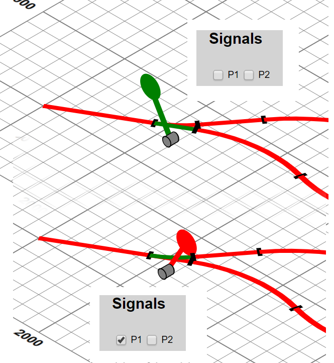

The tool has two main types of interaction: animations, discussed in the next section, and view selection. Most of the view selection is
based on switching the display style of graphical or user inteface element on and off, through controls that are generated
from declarative descriptions. For example:
Figure 14. Controls for display options
<div name="show">
<title>Show</title>
<option default="">photos</option>
<option>survey</option>
<option>grid</option>
<option>plan</option>
<option>buildings</option>
...
</div>
|
|
declares a group of controls, from which a group of labels and checkboxes are generated, some of which are preset and whose rendering is
shown above. Control of display is performed by a generic XSLT template, which fields change events on the generated input
checkboxes, all of which are class-labelled as show:
<xsl:template match="input[@class eq 'show']" mode="ixsl:onchange">
<ixsl:set-style name="display" object="id(@value)"
select="if(ixsl:get(.,'checked')) then 'inline' else 'none'"/>
</xsl:template>The @value of the input is taken to the be id of an element (either XHTML or SVG) that
contains all items of the given type and display style modified accordingly. Generic hide/reveal controls for object
with a given class token are supported by a similar template.
Switching between orthogonal and isometric views of the garden/plan/layout involves modifying a top-level transform attribute on the SVG
and setting a class token to indicate the given view. As all (3D) components have both orthogonal and isometric views, each
class-labelled, simple CSS compound rules such as .viewISO .partORTHO,.viewORTHO .partISO {display: none;} and .viewISO
.partISO,.viewORTHO .partORTHO {display: inline;} ensure that only the correct class components are displayed for the currrent
view.
Points obviously have state and this needs to be changed to direct trains to suitable parts of the layout. We construct an XHTML “signal box” where all the point controls are checkboxes and through which specific points can be set into switched or unSwitched classes. CSS styling ensures that the appropriate components for the given state are displayed. Sometimes determining which control effects which point can be problematic. A solution to this is to support clicking on the (SVG) points themselves, or an adjacent lever. This is achieved by the templates:
<xsl:template match="*[contains-token(@class, 'pointLever')]"
mode="ixsl:onclick">
<xsl:variable name="point"
select="ancestor::*:g[contains-token(@class, 'point')][1]"/>
<xsl:variable name="point.state"
select="id($point/@id||'-state')"/>
<xsl:sequence select="ixsl:call($point.state,'click',[])"/>
</xsl:template>
<xsl:template match="input[contains-token(@class, 'pointState')]"
mode="ixsl:onchange">
<xsl:variable name="checked" select="ixsl:get(., 'checked')"/>
<xsl:sequence select="js:playAudio(id('pointChange'))"/>
<xsl:for-each select="id('point-' || @value, .)/*:g[1]">
<ixsl:set-attribute name="class"
select="if($checked) then 'switched' else 'unSwitched'"/>
</xsl:for-each>
</xsl:template>where clicking on the (SVG) point lever dispatches another click event to the appropriate state control in the signal box. Controls in the signal box respond to changes by playing the pointChange sound effect and changing the (un)switched class of the actual signal, which changes which of the graphic groups is displayed:
Figure 15. Changing points with a signal box
|  |